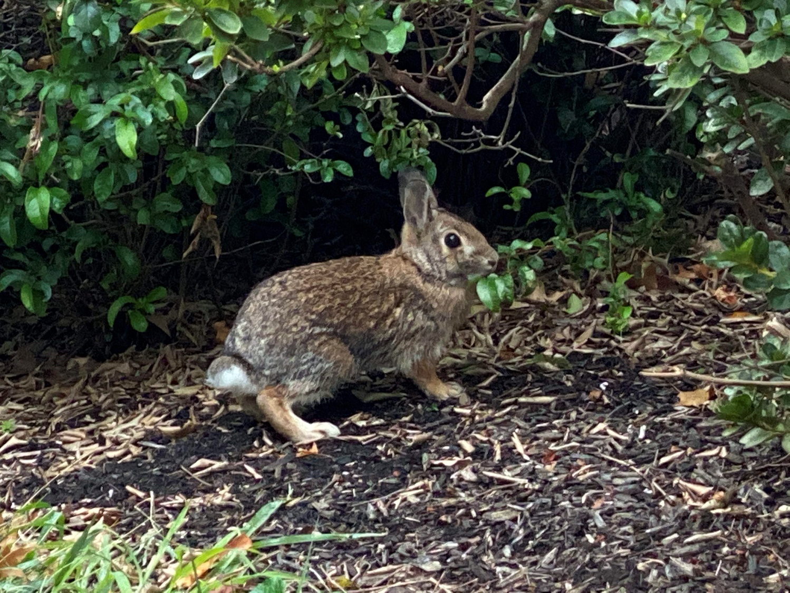
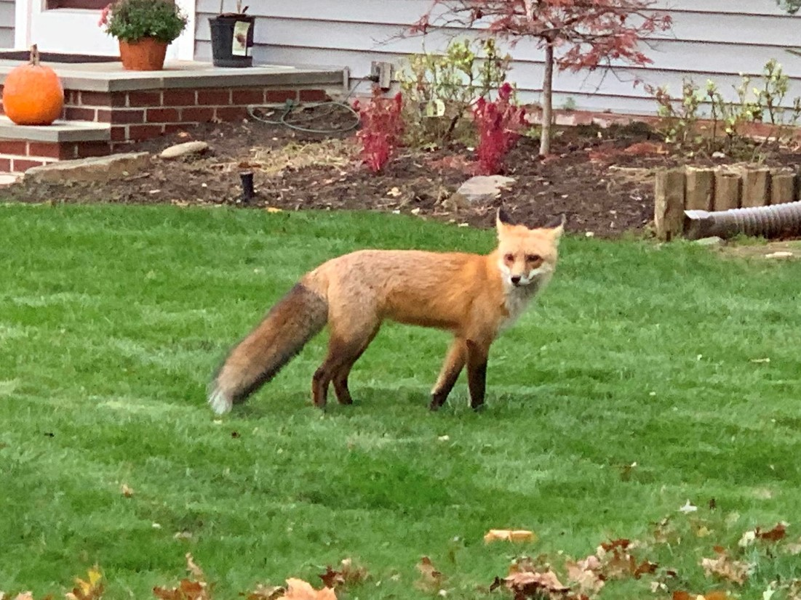
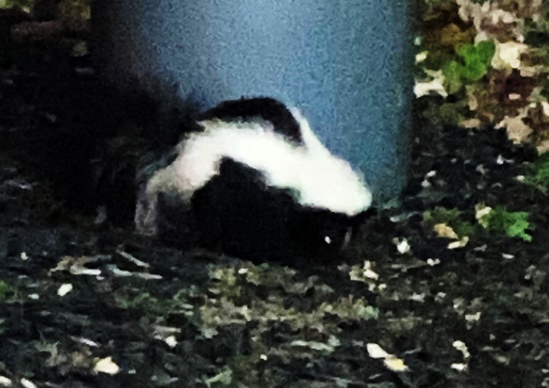

Mammals Found in New Jersey
Eastern Cottontail
Sylvilagus floridanus
Hasbrouck Heights, New Jersey on 10/22/19 at 3:12 PM" width="450" height="auto" onclick="insertModal('eastern-cottontail')">Description
The eastern cottontail is chunky, red-brown or gray-brown in appearance, with large hind feet, long ears, and a short, fluffy white tail. Its underside fur is white. There is a rusty patch on the tail. In winter the cottontail's pelage is more gray than brown. The kits develop the same coloring after a few weeks, but they also have a white blaze that goes down their forehead; this marking eventually disappears. This rabbit is medium-sized, measuring 14–19 in total length, including a small tail that averages 2.1 in. Weight can range from 1.8 to 4.4 lb, with an average of around 2.6 lb. The female tends to be heavier, although the sexes broadly overlap in size.
Diet
The diet of eastern cottontails is varied and largely dependent on availability. Eastern cottontails eat vegetation almost exclusively; arthropods have occasionally been found in pellets. Some studies list as many as 70 to 145 plant species in local diets. Food items include bark, twigs, leaves, fruit, buds, flowers, grass seeds, sedge fruits, and rush seeds. There is a preference for small material: branches, twigs, and stems up to 0.25 in. Leporids including eastern cottontails are coprophagous, producing two types of fecal pellets, one of which is consumed. In summer, eastern cottontails consume tender green herbaceous vegetation when it is available. Other favored species include clovers and crabgrasses. Important summer foods include clovers, alfalfa, timothy, bluegrasses, crabgrasses, redtop, ragweed, goldenrods, plantains, chickweed, and dandelion. Eastern cottontails also consume many domestic crops. During the dormant season, or when green vegetation is covered with snow, eastern cottontails consume twigs, buds, and bark of woody vegetation.
Range/habitat
The eastern cottontail home range is roughly circular in uniform habitats. Eastern cottontails typically inhabit one home range throughout their lifetime, but home range shifts in response to vegetation changes and weather are common. Optimal eastern cottontail habitat includes open grassy areas, clearings, and old fields supporting abundant green grasses and herbs, with shrubs in the area or edges for cover. They use camouflage and deception to hide their nests. Nests are usually constructed in grassy areas and from above appear to be nothing more than a patch of dead grass, leaving no hint of what lies beneath. In an effort to draw as little attention as possible, the nest is only visited twice a day. Eastern cottontails occupy habitats in and around farms including fields, pastures, open woods, thickets associated with fencerows, wooded thickets, forest edges, and suburban areas with adequate food and cover. They are also found in swamps and marshes and usually avoid dense woods, but are seldom found in deep woods.
Red Fox
Vulpes vulpes
Cresskill, New Jersey on 11/3/19 at 4:21 PM" width="460" height="auto" onclick="insertModal('red-fox')">Description
The red fox has an elongated body and relatively short limbs. The tail, which is longer than half the body length, is fluffy and reaches the ground when in a standing position. They are very agile, being capable of jumping over 7 ft high fences, and swim well. On average, adults measure 14–20 in high at the shoulder and 18–35 in in body length with tails measuring 11.8–21.9 in. Weights range from 5–31 lb, with vixens typically weighing 15–20% less than males. They trot at a speed of 4–8 mph, and have a maximum running speed of 30 mph. The winter fur is dense, soft, silky and relatively long. For the northern foxes, the fur is very long, dense and fluffy, but is shorter, sparser and coarser in southern forms.
Diet
Red foxes are omnivores with a highly varied diet. They primarily feed on small rodents like voles, mice, ground squirrels, hamsters, pocket gophers and deer mice. Secondary prey species include birds, porcupines, raccoons, opossums, reptiles, insects and other invertebrates. They typically target mammals up to about 7.7 lb in weight, and they require 18 oz of food daily. Red foxes readily eat plant material, and in some areas, fruit can amount to 100% of their diet in autumn. Red foxes prefer to hunt in the early morning hours before sunrise and late evening. When hunting mouse-like prey, they first pinpoint their prey's location by sound, then leap, sailing high above their quarry, steering in mid-air with their tails, before landing on target up to 16 ft away. They are extremely possessive of their food and will defend their catches from even dominant animals.
Range/habitat
The red fox can be found in most of the United States and Canada, except for the far north in Canada and Alaska and much of the western U.S. and Hawaii. The red fox is found throughout New Hampshire. The red fox is also found in Europe and Asia and it has been introduced to Australia. The red fox makes its home in wooded areas, prairies farmland and is also present in urban areas. Except for breeding females, the fox doesn't usually use a den. Sometimes it will sleep in the open, wrapping its bushy tail around its nose to stay warm. When it does use a den, it will usually find an abandoned rabbit or marmot den instead of making its own den.
Behavior
Red foxes live in family groups sharing a joint territory. In favorable habitats and/or areas with low hunting pressure, subordinate foxes may be present in a range. Subordinate foxes may number one or two, sometimes up to eight in one territory. These subordinates could be formerly dominant animals, but are mostly young from the previous year, who act as helpers in rearing the breeding vixen's kits. Red foxes may leave their families once they reach adulthood if the chances of winning a territory of their own are high. If not, they will stay with their parents, at the cost of postponing their own reproduction.
Striped Skunk
Mephitis mephitis
East Rutherford, New Jersey on 11/13/19 at 6:43 PM" width="450" height="auto" onclick="insertModal('striped-skunk')">Description
The striped skunk is a stoutly-built, short-limbed animal with a small, conical head and a long, heavily furred tail. Adult males are 10% larger than females, with both sexes measuring between 20-30 in in total body length and usually weighing 4.0–9.9 lb. The forefeet are armed with five long, curved claws adapted for digging, while those on the hind feet are shorter and straighter. The color patterns of the fur vary greatly, but generally consist of a black base with a white stripe extending from the head which divides along the shoulders, continuing along the flanks to the rump and tail. Some specimens have a white patch on the chest, while others bear white stripes on the outer surface of the front limbs. Brown or cream-colored mutations occasionally occur. Like all skunks, the striped skunk possesses two highly developed scent glands containing about 15 milliliters of musk each, which provides a chemical defense against predation. This oily, yellow-colored musk consists of a mixture of powerfully odorous thiols, which can be sprayed at a distance of several meters.
Diet
While primarily an insectivore, the striped skunk is adaptable enough to incorporate other animals and even vegetable matter into its diet. The most frequently consumed insects include grasshoppers, beetles, crickets, and caterpillars. In the winter and spring months, the striped skunk will supplement its diet with vertebrates such as white-footed mice, voles, eggs and the chicks of ground nesting birds. While not adapted for chasing fleet-footed prey, at least one specimen was observed pursuing gray cottontails into their burrows. When in season, the skunk will also consume vegetable matter, such as apples, blueberries, black cherries, ground cherries, corn and nightshade.
Range/habitat
Striped skunks have a range spanning most of North America. From east to west, they reach from the Atlantic to the Pacific Ocean, covering most of the continental United States and southern regions of Canada. They also range to the south over a portion of northern Mexico. The striped skunk is commonly found in a variety of habitats including woodlands, forests, wooded ravines and grassy plains. Over time, however, they have become more prominent in areas of extreme cultivation as well as in suburban neighborhoods. Other habitats may include scrubland, riparian areas and urban environments. On average, M. mephitis is found at elevations from sea level to 1,800 m, but have been documented as high as 4,200 m.